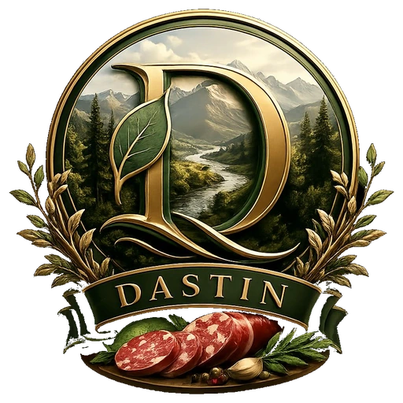
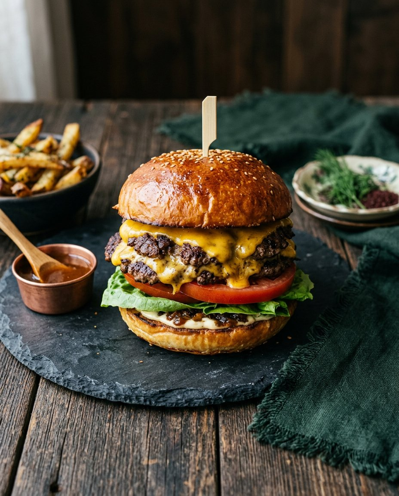
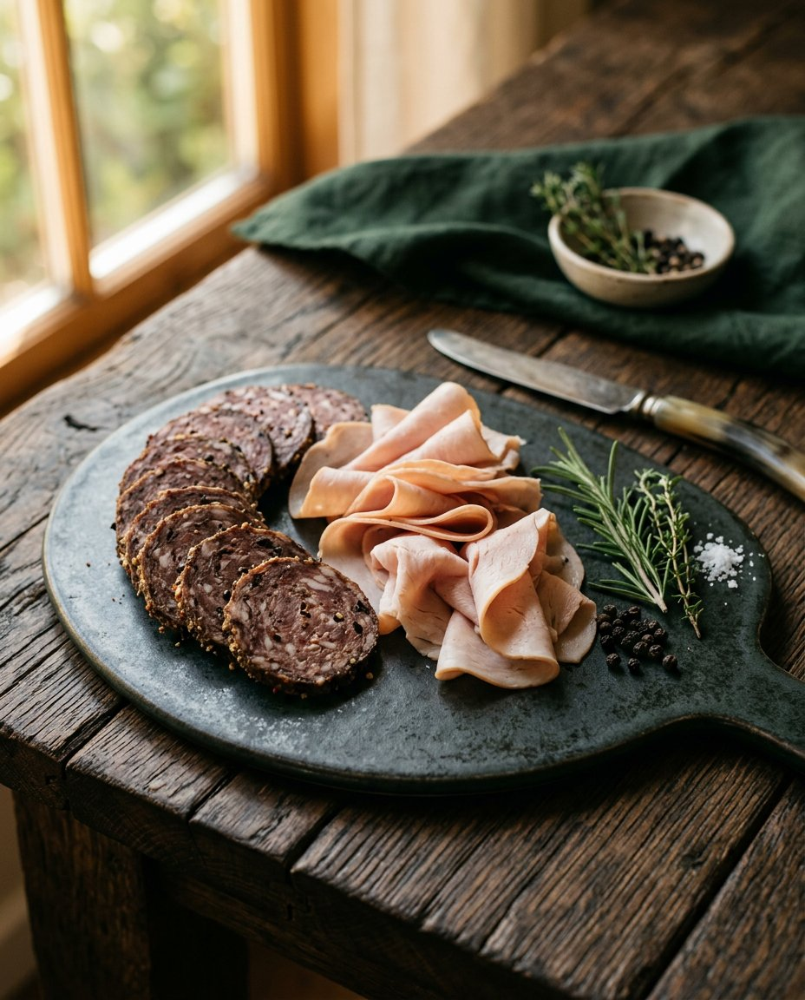

شیرین / لطیف
دستساز / با عشق

آشپزی آرام، مزهی ماندگار
DASTIN (دستین)، تجربهای از غذای دستساز است؛ با مواد خوب، زمان کافی و آن حس گرم و کمیابِ چیزی که واقعاً برای شما آماده شده

مواد واقعی
برای آدمهای واقعی
از مهمانیهای شلوغ تا یک عصرانهی دو نفره، برای هر حالوهوایی چیزی خوشطعم داریم


۰۱ کیک و شیرینی های رژیمی و فوقالعاده
۰۲ برگر های لذیذ
۰۳ سوسیس و کالباس خانگی
انتخابهای امروز
روی هر محصول بزنید؛ داستان، وزن، قیمت و جزئیات آن را میبینید
کاتالوگ DASTIN (دستین) مجموعهای از برگرهای دستساز، سوسیس و کالباس خانگی، فینگر فود و کیکهای تازه را معرفی میکند؛ برای دیدن داستان و جزئیات هر محصول، آن را انتخاب کنید.
در این دسته هنوز طعمی ثبت نشده است
DASTIN / TASTE SLOWLY
بگذارید از طعم حرف بزنیم
برای سفارش، همکاری یا ساختن میز بعدیتان، از هر راهی که راحتترید به ما پیام دهید